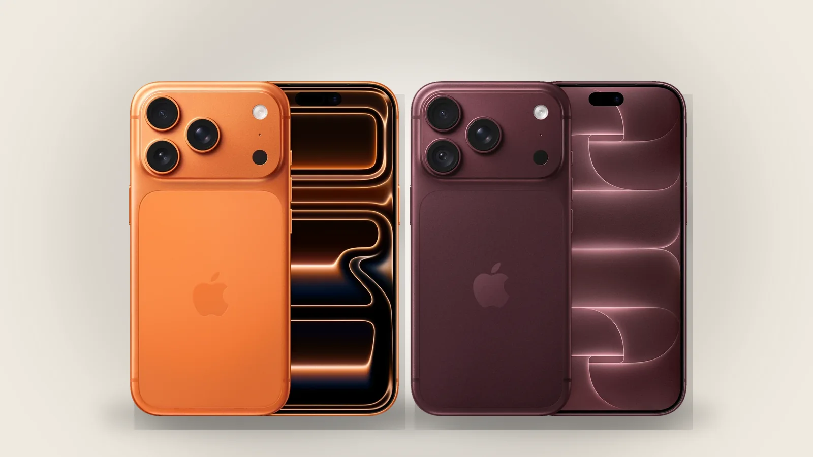
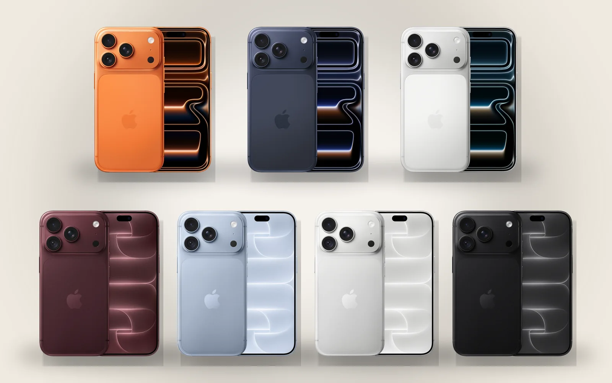

iPhone 17 Pro, թե iPhone 18 Pro․ ինչն է իրականում փոխվել
Դրսից դրանք գրեթե նույն հեռախոսն են։ Տարբերությունը ներսում է և գնի մեջ։

Դիզայն
Չափերն ու ձևը նույնն են, 18 Pro-ն մի քանի գրամով ծանր է (մոտ 211 գ՝ 206 գ-ի դիմաց)։ Փոխվում են գույները․ 17 Pro-ն թողարկվել է Cosmic Orange, Deep Blue և Silver գույներով, 18 Pro-ն՝ Burgundy, Glacier, Silver և Black։

Չիպ և սառեցում
A19 Pro (3 նմ)՝ A20 Pro-ի (2 նմ) դիմաց։ 18 Pro-ն ունի նաև վերամշակված գոլորշային խցիկ, ուստի խաղերում և տեսանյութ արտահանելիս ավելի երկար է պահում արագությունը։ Տարբերությունը նկատելի է երկար ծանրաբեռնվածության ժամանակ, ոչ թե առօրյա օգտագործման։
Տեսախցիկ
Երկուսն էլ ունեն երեք 48 ՄՊ տեսախցիկ՝ 4x հեռաոսպնյակով։ Նորը հիմնական տեսախցիկի փոփոխական դիաֆրագման է՝ f/1.48 գիշերային լուսանկարների համար և մինչև f/4՝ ավելի հստակ խմբային լուսանկարների ու բնապատկերների համար։ 17 Pro-ի հիմնական տեսախցիկի դիաֆրագման ֆիքսված է՝ f/1.78։ Տեսանյութի համար էլ կան նոր գործիքներ, օրինակ՝ 4K Dolby Vision թայմլափս։
Մարտկոց
- 17 Pro՝ մինչև 33 ժամ տեսանյութ · 18 Pro՝ մինչև 36։
- 17 Pro Max՝ մինչև 39 ժամ · 18 Pro Max՝ մինչև 45։
Apple-ը այս թվերը նշում է միայն eSIM ունեցող մոդելների համար․ SIM-ի սկուտեղով տարբերակները գնահատված են մոտ երկու ժամով պակաս։
Մնացածը
- Ավելի փոքր Dynamic Island՝ միաժամանակ մինչև երեք Live Activity։
- Ավելի արագ լարային լիցքավորում և նոր բջջային մոդեմ։
- 2 ՏԲ հիշողությունն այժմ հասանելի է նաև 6.3 դյույմանոց Pro-ում, ոչ միայն Pro Max-ում։
Գին
ԱՄՆ-ում 18 Pro-ն $100-ով թանկ է, քան 17 Pro-ն էր թողարկման պահին ($1,199՝ $1,099-ի դիմաց)։ Հայաստանում այսօր՝
- iPhone 17 Pro՝ 469 000 ֏-ից, iPhone 18 Pro՝ 619 900 ֏-ից․ 150 900 ֏-ով թանկ։
- iPhone 17 Pro Max՝ 499 000 ֏-ից, iPhone 18 Pro Max՝ 679 900 ֏-ից․ 180 900 ֏-ով թանկ։
Սրանք բոլոր տարբերակների մեջ ամենացածր գներն են․ SIM-ի տեսակը և հիշողության ծավալը փոխում են գինը, բոլոր տարբերակները՝ յուրաքանչյուր ապրանքի էջում։
Որն ընտրել
Եթե արդեն ունեք 17 Pro, փոխելու իմաստը քիչ է։ 15 Pro-ից կամ ավելի հին մոդելից 18 Pro-ն նկատելի քայլ է՝ ավելի երկար մարտկոց և ավելի լավ տեսախցիկ։ Եթե գինն ավելի կարևոր է, քան նորագույն տեսախցիկը, 17 Pro-ն գրեթե նույն հեռախոսն է ավելի ցածր գնով։
Աղբյուրներ՝ Apple Newsroom: iPhone 18 Pro and iPhone 18 Pro Max · MacRumors: iPhone 17 Pro vs. iPhone 18 Pro · Tom's Guide: iPhone 18 Pro Max vs iPhone 17 Pro Max · AppleInsider: iPhone 18 Pro vs iPhone 17 Pro
24.09.2026